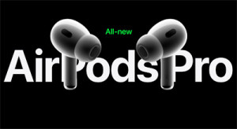
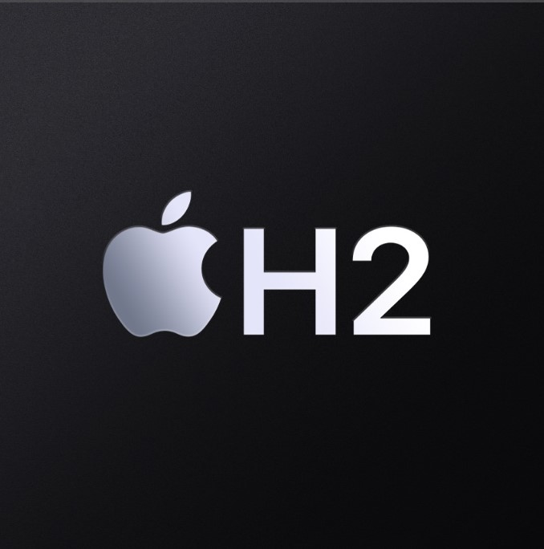
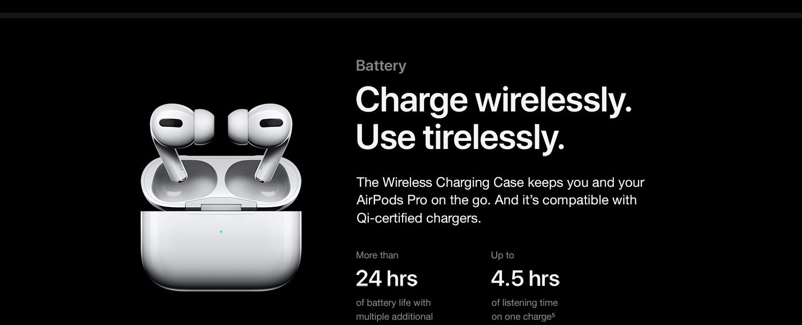
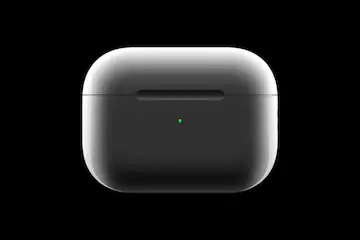
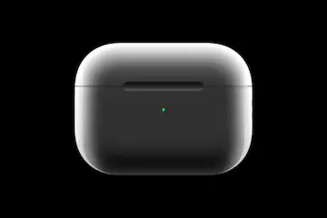
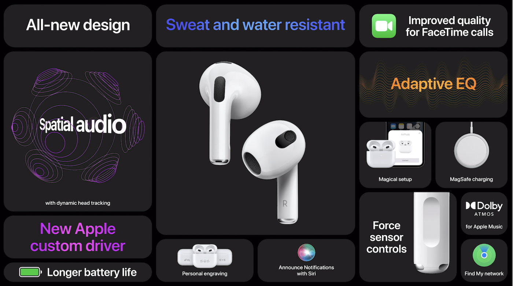
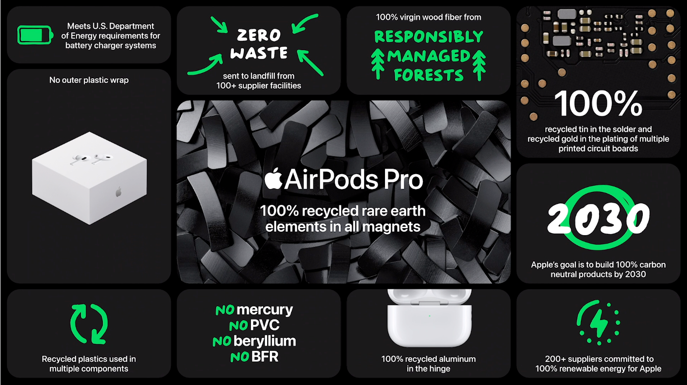
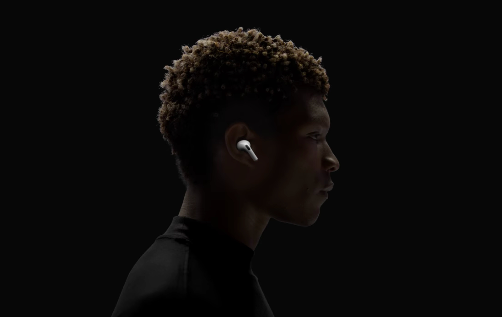
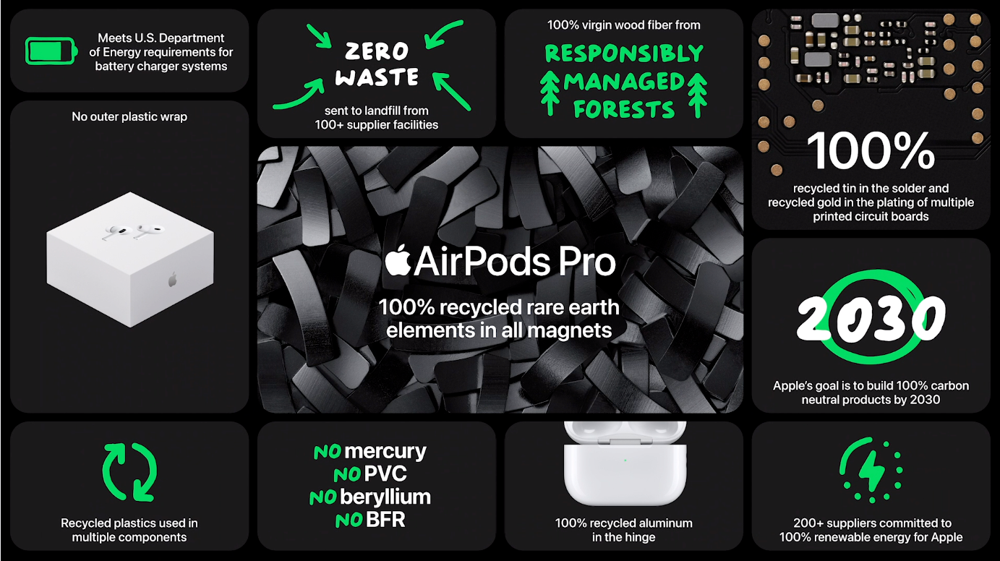
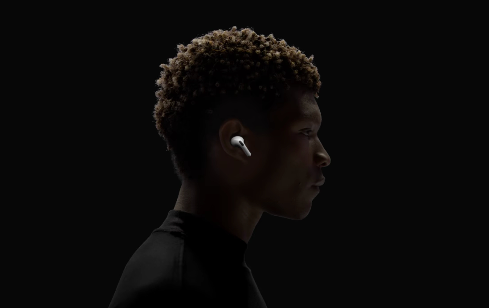

About The New Airpod Pro
What is New?

Audio performance H2
More
immersive by
every measure.
The Apple-designed H2 chip is the force behind the advanced audio performance of AirPods Pro, working with the driver and amplifier to create crisp, high-definition sound. It uses computational algorithms to deliver noise cancellation,superior three-dimensional sound, and efficient battery life — all at once. The chip uses powerful adaptation algorithms to process sound more quickly, tuning audio at the precise moment you hear it. Every detail is rendered for your specific ear shape, immersing you in higher-fidelity sound. An inward-facing microphone works with voice enhancement algorithms to recognize and articulate your voice, so your phone and video calls always sound completely natural. X-ray perspective of AirPods Pro with casing of H2 chip highlighted. A custom-built driver and amplifier work with the H2 chip to provide lower d istortion during playback, so you'll hear deeper bass and crisper highs — across all volume levels. The H2-powered AirPods Pro now feature Adaptive Audio, automatically prioritizing sounds that need your attention as you move through the world. By seamlessly blending Active Noise Cancellation with Transparency mode when you need it, Adaptive Audio magically delivers the right mix of sound for any environment.
The Apple-designed H2 chip is the force behind the advanced audio performance of AirPods Pro, working with the driver and amplifier to create crisp, high-definition sound. It uses computational algorithms to deliver noise cancellation,superior three-dimensional sound, and efficient battery life — all at once. The chip uses powerful adaptation algorithms to process sound more quickly, tuning audio at the precise moment you hear it. Every detail is rendered for your specific ear shape, immersing you in higher-fidelity sound. An inward-facing microphone works with voice enhancement algorithms to recognize and articulate your voice, so your phone and video calls always sound completely natural. X-ray perspective of AirPods Pro with casing of H2 chip highlighted. A custom-built driver and amplifier work with the H2 chip to provide lower d istortion during playback, so you'll hear deeper bass and crisper highs — across all volume levels. The H2-powered AirPods Pro now feature Adaptive Audio, automatically prioritizing sounds that need your attention as you move through the world. By seamlessly blending Active Noise Cancellation with Transparency mode when you need it, Adaptive Audio magically delivers the right mix of sound for any environment.
Case,Battery life and Charging
A case of unmistakable power.
The MagSafe Charging Case5 is loaded with features that make listening on the move
especially convenient.
The case offers helpful ways to keep track of its location,
and extended battery life lets you listen, watch,
and talk longer between charges.
You won't find a more capable case.
Up to 4.5 hours
of listening time with
Active Noise Cancellation enabled.6
More than 30 hours
of total listening time with
Active Noise Cancellation enabled,
using the case.7
Recharge the MagSafe Charging Case5 with an USB-C connector ,
Apple Watch charger, or MagSafe charger. You can also use a Qi-certified charger.

Personalized listening Sound.
 

AirPods Pro take the listening experience to a new level of individuality. Personalized Spatial
Audio with dynamic head tracking works
with all your devices to immerse you deeper in all-around-you sound.4 And Adaptive EQ accounts
for the fit of AirPods Pro, so you hear every frequency just as it was intended.
To play sound that better suits your unique ear shape, Personalized Spatial Audio works
with the TrueDepth camera on your iPhone to create a custom profile based on your head's
geometry. The profile syncs across your devices — delivering phenomenal sound every way you listen.4
Dynamic head tracking brings three-dimensional audio to Group FaceTime calls, so conversations
feel like you're in the same room with your friends and family.
Adaptive EQ tunes music to your ears in real time based on the fit of AirPods Pro.
Inward-facing microphones measure what you're hearing, then adjust the low to high
frequencies of a song — so you get consistently detailed playback, every time.
More on the Airpod Pro..

AirPods Pro will pair with Apple Vision Pro (available early next year in the U.S.)
to deliver Lossless Audio with ultra-low latency, for an unprecedented sound
experience.1 Both feature the H2 chip, communicating at industry-shattering speed
and unlocking a revolutionary new format rendering pure, uncompressed sound in real time.
So your movies, shows, and games become breathtakingly immersive.
Personalized Volume2 uses machine learning to understand your listening preferences in different environments,
and automatically adapts sound based on your patterns over time.
When you're wearing AirPods Pro and need to speak with someone nearby,
Conversation Awareness2 automatically lowers the volume of what's playing,
enhances voices in front of you, and reduces background noise.
A higher levelof control Touch control lets you manage playback functions from the stem. Swipe up or down to adjust volume, press to play and pause music or mute and unmute yourself on calls, and press twice to end a call. You can also hold the stem to switch between listening modes.
An inward-facing microphone works with voice enhancement algorithms to recognize and articulate your voice, so your phone and video calls always sound completely natural. X-ray perspective of AirPods Pro with casing of H2 chip highlighted. A custom-built driver and amplifier work with the H2 chip to provide lower distortion during playback, so you'll hear deeper bass and crisper highs — across all volume levels.
A higher levelof control Touch control lets you manage playback functions from the stem. Swipe up or down to adjust volume, press to play and pause music or mute and unmute yourself on calls, and press twice to end a call. You can also hold the stem to switch between listening modes.
An inward-facing microphone works with voice enhancement algorithms to recognize and articulate your voice, so your phone and video calls always sound completely natural. X-ray perspective of AirPods Pro with casing of H2 chip highlighted. A custom-built driver and amplifier work with the H2 chip to provide lower distortion during playback, so you'll hear deeper bass and crisper highs — across all volume levels.
 


